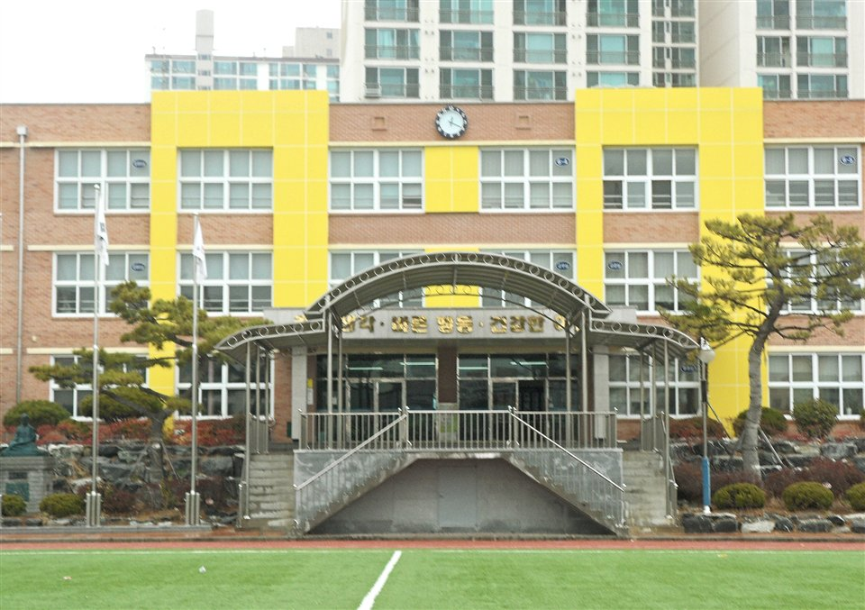

울산 남구는 한 구 안에서 생활권이 꽤 갈립니다. 삼산동 쪽 상업지구, 옥동·신정동 쪽 주거지, 무거동 쪽 대학가가 각각 다른 동네처럼 움직입니다. 문수고(문수고등학교)·대현고(대현고등학교)·울산강남고(울산강남고등학교)·신정고(신정고등학교) 같은 고등학교와 대현중(대현중학교)·옥동중(옥동중학교)·신정중(신정중학교)·무거중(무거중학교)이 흩어져 있어, 학원가가 걸어갈 거리인 집과 버스를 타야 하는 집의 저녁이 완전히 다릅니다. 이동에만 한 시간이 드는 집이라면 집으로 오는 1:1 중등 수학과외나 초등 영어과외를 따로 찾게 됩니다.
오늘은 남구로 직접 찾아가는 선생님들 가운데 맡는 과목이 서로 다른 두 분을 소개합니다. 한 분은 수학과 과학을 초등부터 고3까지 보는 선생님, 한 분은 영어를 초등부터 중3까지 보는 선생님입니다.
남구에서 중등 수학과외 문의가 들어오는 자리는 대개 중2 1학기입니다. 중1까지는 문제집 속도로 버텼는데, 식이 길어지면서 "계산은 맞는데 답이 틀린다"가 시작됩니다. 이 선생님을 소개하는 이유는 속도보다 방향을 먼저 잡는 쪽이기 때문입니다. 빨리 푸는 훈련보다, 왜 그렇게 푸는지를 설명하고 학습 자세부터 바로잡는 순서로 수업합니다.
수학과 과학을 한 사람이 함께 볼 수 있다는 점도 장점입니다. 중·고등 과정에서 수학에서 막힌 자리가 과학 계산 문항으로 그대로 이어지는 경우가 많은데, 두 과목을 같이 보면 그 연결을 수업 안에서 잡을 수 있습니다. 고등부 공통수학과 통합과학을 지금도 지도하고 있어 고1 과정까지 이어서 맡길 수 있고, 남구·중구·울주군을 함께 다니므로 이사가 있어도 수업을 이어 가기 쉽습니다.
김ㅇ재 선생님 상세 프로필 →남구에서 초등 영어과외를 찾는 이유는 대개 초등 고학년에서 중학교로 넘어가는 자리입니다. 파닉스와 단어까지는 따라갔는데, 지문이 길어지고 문법 용어가 나오면서 한 번에 멀어집니다. 이 선생님을 소개하는 이유는 한 영역만 파고들지 않기 때문입니다. 단어, 리딩, 문법, 리스닝을 함께 보며 어느 한쪽이 비어 있지 않게 끌고 갑니다.
파닉스부터 중3까지 한 사람이 이어서 볼 수 있어, 학년이 바뀔 때마다 처음부터 다시 진단할 필요가 없습니다. 이해가 될 때까지 같은 자리를 여러 번 돌아 주는 방식이라, 진도를 빼는 수업에서 자꾸 놓치던 학생에게 맞습니다. 남구와 북구를 함께 다니고, 시간 약속과 보강을 지키는 쪽이라 맞벌이 가정에서 일정 잡기가 비교적 수월합니다.
강ㅇ경 선생님 상세 프로필 →학교마다 진도와 시험 범위가 달라서, 학교별로 준비법을 따로 정리해 두었습니다.
관련 검색어: 울산남구수학과외 · 울산남구영어과외 · 문수고내신 · 대현중영어과외 · 옥동중수학과외
👉 남구 수학과외 선생님 · 남구 영어과외 선생님 · 남구 관리 학교 전체 보기